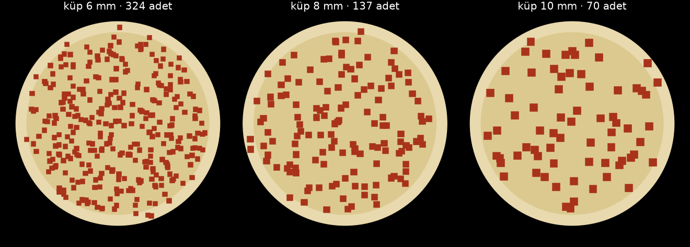

Küp sucuk sert, yağlı, iri tane: kuşbaşıyla AYNI kasete (gövde, vida, tüp, rotor birebir aynı) giriyor; yeniden kurulan şey hesap. Hesabı yine tek sayı yönetiyor: küp kenarı d. Kasetin her ölçüsü d'nin katı olarak çıkıyor.
| kural | kaynak | gereken | kasette |
|---|---|---|---|
| Köprü kurmasın: düşey açıklık | BulkInside · tek boy tanede 4 ×, karışıkta 2–3 × | ≥ 4 d | boğaz = tekne Ø72 · ağız 48 × 44 |
| Topak sıkışmasın: mil ile tekne arası | CEMA 350 / KWS · R = 1,75 · 2,5 · 4,5 | ≥ R · d | 28 mm · konik kökte 22 mm |
| Küp iki kanat arasına sığsın | geometri | net boşluk ≥ 3 d | hatve 40 → 50,5, kanat 4 mm → 36 mm · çift ağız OLMAZ |
| İki hareketli yüzey arası küp ezmesin | geometri: ya giremesin ya rahat geçsin | < d/3 ya da > 1,5 d | lama–duvar 19,3 · rotor–kanat 22 |
CEMA'nın “hepsi topak” sınıfı (R = 4,5) 10 mm küpte bile 45 mm boşluk ister; 140'lık gövdeye sığmaz. O kural kömür, taş gibi sert topak için. Sucuk yarı sert; biz sınıf 2'nin (2,5) üstündeyiz. Sıkışma olursa ilk bakılacak yer burası.
| küp | bir küp | pide başına | boğaz | R (mil–tekne) | hatve | ağız | rotor |
|---|---|---|---|---|---|---|---|
| 6 mm | 0,22 g | 324 | ✓ | 4,67 ✓ | ✓ | ✓ | ✓ |
| 8 mm | 0,51 g | 137 | ✓ | 3,50 ✓ | ✓ | ✓ | ✓ |
| 10 mm | 1,00 g | 70 | ✓ | 2,80 ✓ | ✓ | ✓ | ✓ |
| 12 mm | 1,73 g | 41 | ✓ | 2,33 ✓ | ✓ | ✗ | ✓ |
| 15 mm | 3,38 g | 21 | ✓ | 1,87 ✓ | ✗ | ✗ | ✗ |
Kaşardaki aynı formül. Arkada konik kök, öne doğru açılan hatve: kapasite akış yönünde sürekli artıyor, küp hiçbir yerde sıkışmıyor ve hazne yalnız arkadan değil boyunca çekiliyor.
| yer (arka → ön) | hatve | mil | Vt mL/tur | verim | taşınan mL/tur |
|---|---|---|---|---|---|
| %0 | 40,0 | Ø28,0 | 124,4 | 0,88 | 109,7 |
| %10 | 41,0 | Ø21,6 | 137,3 | 0,87 | 119,5 |
| %19 | 42,0 | Ø16,0 | 146,9 | 0,86 | 126,5 |
| %40 | 44,2 | Ø16,0 | 155,6 | 0,85 | 132,3 |
| %70 | 47,3 | Ø16,0 | 167,7 | 0,84 | 140,2 |
| %100 | 50,5 | Ø16,0 | 179,9 | 0,82 | 147,6 |
Sürtünmeye duyarlılık (ön uç, mL/tur): φ 15° → 146,7 · φ 19° → 142,5 · φ 25° → 135,8 · φ 30° → 129,7 · φ 40° → 115,4. Sürtünme iki katına çıksa kapasite %20 düşüyor — sonuç sürtünme varsayımına çok bağlı değil.
| doluluk VARSAYIM | tur başına | 145 g | 10 sn'de | kanat ucu hızı | ± %5 doz |
|---|---|---|---|---|---|
| 0,45 | 39,9 g | 1,76 tur | 10,5 dev/dk | 0,038 m/s | ± 32° |
| 0,60 | 53,2 g | 1,32 tur | 7,9 dev/dk | 0,028 m/s | ± 24° |
| 0,75 | 66,4 g | 1,05 tur | 6,3 dev/dk | 0,023 m/s | ± 19° |
Vida büyük olduğu için doz ≈ 2 turda çıkıyor. Kaşardaki gibi olsaydı bu “pide başına 2 öbek” demekti. Onu şu çözüyor:
Vida hacim ölçer, küp saymaz. Dozun başında ve sonunda kesme düzlemine denk gelen küpler “içeride mi dışarıda mı” belirsiz. Bu, hiçbir ayarla giderilemeyen alt sınır; doluluk oynarsa üstüne biner.
| küp | kesme düzleminde | belirsizlik | dozda | tek küp |
|---|---|---|---|---|
| 6 mm | 38,7 | ± 2,54 küp | ± %0,8 | %0,3 |
| 8 mm | 21,8 | ± 1,90 küp | ± %1,4 | %0,7 |
| 10 mm | 13,9 | ± 1,52 küp | ± %2,2 | %1,4 |
| 12 mm | 9,7 | ± 1,27 küp | ± %3,1 | %2,5 |
| 15 mm | 6,2 | ± 1,02 küp | ± %4,9 | %4,8 |
Tabla 35 dev/dk dönerken dıştan içe yürüyor, küpler sürekli düşüyor. 25 mm'lik hücrelerde küp sayıldı (8 deneme ortalaması). “Rastgele serpmenin sınırı” = bu kadar az küple elde edilebilecek en iyi düzgünlük.

| küp | adet | hücre başına | sapma | rastgele serpmenin sınırı | boş hücre |
|---|---|---|---|---|---|
| 6 mm | 324 | 4,2 | %47 | %49 | %1,2 |
| 8 mm | 137 | 1,8 | %69 | %75 | %12,9 |
| 10 mm | 70 | 0,9 | %96 | %105 | %36,9 |
| 12 mm | 41 | 0,5 | %126 | %138 | %55,7 |
| 15 mm | 21 | 0,3 | %186 | %192 | %75,6 |
Sapma her boyda rastgele serpmenin sınırında: makine elinden geleni yapıyor, boşluğu belirleyen küp sayısı. 10 mm'de hücrelerin %10'u boş, 15 mm'de yarısından fazlası. Düzgün görünen pide için de küçük küp gerekiyor.
Hesap şu kurguyla yapıldı: helezon doz boyunca sabit hızla döner (sabit gram/saniye), tabla dönerken ağız pidenin dışından içine yürür. Her halkaya cm² başına aynı gram düşmesi için ağzın her yarıçapta ne kadar oyalanacağı çözüldü (negatif olmayan en küçük kareler, scipy).
Kaşarın hareket yasası burada tutmadı: kaşar eriyip ≈ 13 mm yayılıyor, küp yayılmıyor. Kaşar yasasıyla halkalar arası sapma %20 (en dış halka ortalamanın %63'i). Kuşbaşı için çözülen yasayla %13 (en dış halka %80).
| ağız merkezi en dışta | halkalar arası sapma | kenar payına (r > 125) taşan |
|---|---|---|
| r 95 | %23 | %1,5 |
| r 100 | %16 | %4,2 |
| r 105 ← seçilen | %12 | %7,7 |
| r 110 | %10 | %11,1 |
Bu bir takas: ağız 48 mm geniş olduğu için en dış halkayı doldurmak, bir kısmını kenar payına taşırmadan olmuyor. Oyalanma süreleri: r 105: 2,49 sn · r 100: 2,01 sn · r 95: 1,24 sn · r 90: 0,49 sn · r 70: 0,11 sn · r 65: 0,36 sn · r 60: 0,66 sn · r 55: 0,79 sn · r 50: 0,71 sn · r 45: 0,50 sn · r 40: 0,14 sn · r 10: 0,46 sn.
| aynı 70 g nasıl düşerse (küp 8 mm) | pidede boş hücre |
|---|---|
| sürekli (eşik + tıkaç çalışıyor) | %13,2 |
| 4 öbek | %33,6 |
| 2 öbek (tur başına bir boşalma) | %47,6 |
| tek seferde | %50,0 |
Çalışma torku ≈ 0,11 N·m (yatak 0,71 kg + hazne basıncı, sürtünme 7,2 N). Redüktör 24 N·m veriyor; tehlike çalışma değil sıkışma. Sürücüde akım sınırı ≈ 3 N·m olmalı ki iri bir parça sıkışırsa baskı kanat kırılmasın, motor dursun.
Doluluk (0,60) varsayım. Islak küplerin kanalı ne kadar doldurduğu ancak tartıyla bulunur. Eşiğin üstünden tıkaç akışı hesapta tutarlı ama denenmedi. Soğukta yağ sertleşip küpleri birbirine yapıştırabilir (topaklanma) — rotor bunun için var; denemede bakılacak. Gerçek parçacık simülasyonu yok; 7. bölüm bir serpme modeli, küplerin birbirine yapışmasını bilmez. Dilimleyiciye göre farkı: bıçak, şarjör ve sayma yok; doz hacimle veriliyor, o yüzden 6. bölümdeki alt sınır geçerli.
1) Alınacak küp sucuğun 20 tanesini cetvelle ölç → d. 2) 1 litrelik kabı doldur, tart → dökme yoğunluk. 3) Helezonu elle 5 tur çevir, çıkanı tart → g/tur ve doluluk. Bu üç sayıyla bütün sayfa yeniden hesaplanır.